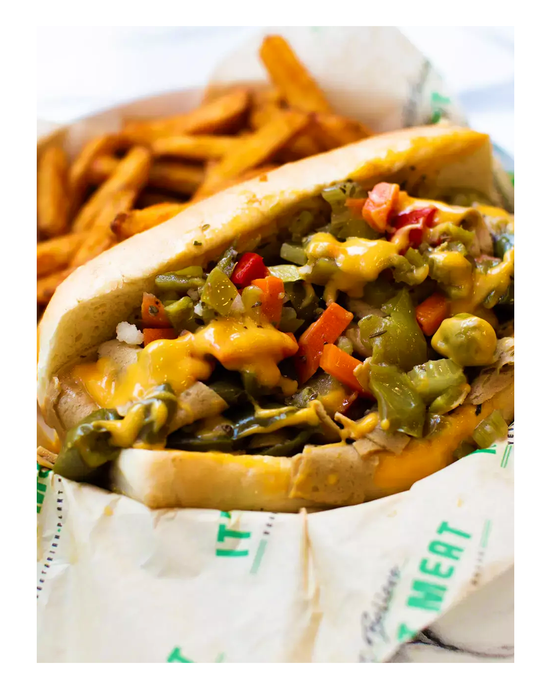

The Bear Braised Beef Sandwich

Description
If there’s one thing, The Bear has taught us: hot beef sandwiches should come sauced, hot or sweet. Bonus points if you can get the delicate balance of sweet, salty and spicy.
If you want to recreate this at home, you’re looking for a slow-cooker recipe. Ideally, a cheaper cut of steak. Flank steak or top round, hanger steak, tri-tip steak, top sirloin steak, flat-iron steak, and flap steak will do. Do not go all in on sirloin or fillet. Those are best reverse-seared in butter with garlic and Rosemary.
Ingredients
- 4lb Top Sirloin or Top Round
- 2tbs Dried Oregano (Knorr preferrred)
- 1.5tbs Garlic Powder
- 1.5tbs Onion Powder
- 1.5tbs Dried Basil
- 1.5tbs Crushed Chilli Flake
- 1tbs Toasted black pepper
- 1/2c Kosher Salt
- 1qt Grapeseed Oil
- 2qt Beef Stock
- 2 whole heads of Garlic
- 2 large Carrots
- 2 Onion
- 1 whole stalk Celery
- 1qt Mild Giardinara
- 5 Green Bell Peppers
- 5 Turano, Gonnella, or Amoroso sandwich rolls (cut in half)
Steps
- Trim fat from beef and set aside, you can always use it as the fat base if you have a food processor but if you don’t, cover the base of your pan with Grapeseed oil.
- Season beef with salt and pepper. In a large rondeau heat Grapeseed oil under medium / high heat. Sear beef on all sides to brown.
- Once browned, remove beef and rest on a half sheet tray with a cooling rack. Deglaze pan with your aromatics – the rough chopped, skin on, carrots, celery and garlic and stir with a wooden spoon to melt. Once all the fond has come up from the pan, deglaze with beef stock and stir.
- Mix in dried herbs, bouillon, and seasonings.
- Add beef back in with the torn or sliced green peppers, just make sure to remove all the seeds.
- Add beef back in with the torn or sliced green peppers, just make sure to remove all the seeds. Cook in oven set at 350 degrees for 1 hour. Checking internal temp to 140 degrees.
- Once your beef has cooked, take it out and let it rest until cool.
- Remove your peppers from the jus and place in to another large pot that is on very low heat, then strain your liquid to remove all the onions, celery, carrots, and garlic. Taste for seasoning and add salt if necessary.
- Once the beef has fully cooled and rested, thinly slice the beef about half an inch thickness if you can and place it all back in the jus with the peppers.
- Get all your buns ready to start building! Slice your bun in half and take a tong-full of your beef, lay it in gently, then stuff one of the peppers in there and top with your Giardinara. Dip each corner into the jus and wrap up your sandwich in parchment or wax paper.
Home